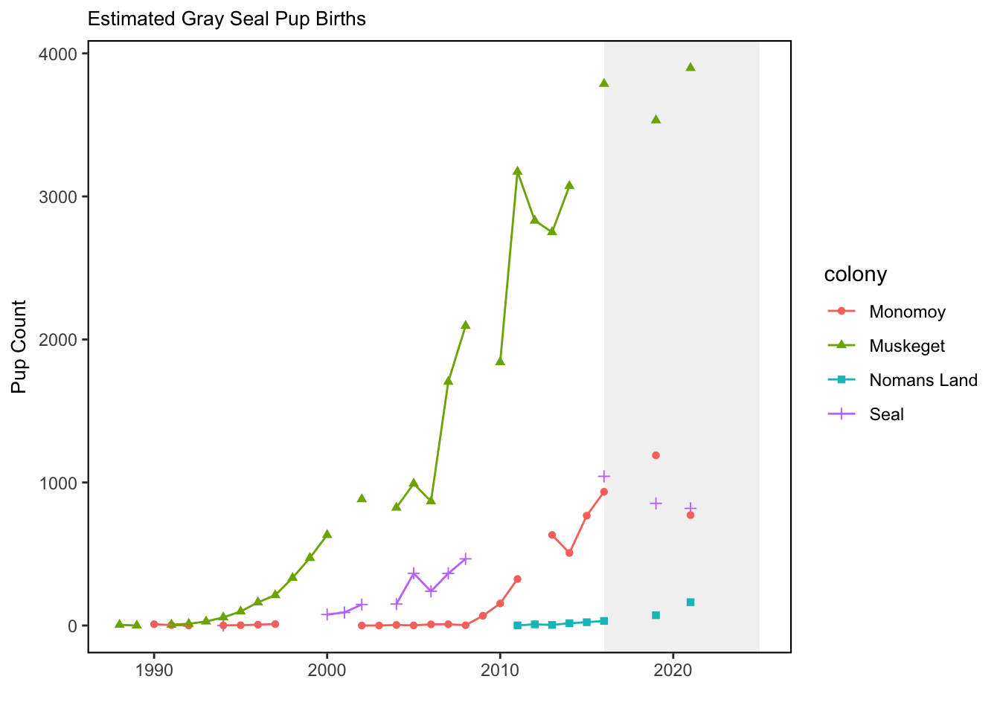

SMART Indicator Report: Gray Seal Pups
1 Descriptive Section
1.2 Indicator name
Gray Seal Pups
Includes variable(s): count-Green, count-Monomoy, count-Muskeget, count-Nomans.Land, count-Seal, log-Green, log-Monomoy, log-Muskeget, log-Nomans.Land, log-Seal
1.3 Indicator brief description
The data presented here are counts of gray seal pups at 4 U.S. haulout sites from 1988 to 2021.
1.4 Indicator visualization
The increase in bycatch of gray seals since 1995 corresponds to an increase in numbers of gray seals in U.S. waters, which has risen dramatically in the last three decades. Based on a survey conducted in 2021, the size of the gray seal population in the U.S. during the breeding season was approximately 28,000 animals, while in Canada the population was estimated to be roughly 425,000. The population in Canada is increasing at roughly 4% per year, and contributing to rates of increase in the U.S., where the number of pupping sites has increased from one in 1988 to nine in 2019. Mean rates of increase in the number of pups born at various times since 1988 at four of the more data-rich pupping sites (Muskeget, Monomoy, Seal, and Nomans Land) ranged from no change on Nomans Land to high rates of increase on the other three islands, with a maximum increase of 26.3% (95%CI: 21.6 - 31.4%; [66]).

2 SMART Attribute Section
2.1 Indicator documentation
2.1.1 Are indicators available for others to use (data downloadable)?
Yes
2.1.1.1 Where can indicators be found?
Data: https://noaa-edab.github.io/ecodata/index.html
Description: https://noaa-edab.github.io/catalog/seal_pups.html
Technical documentation: https://noaa-edab.github.io/tech-doc/seal_pups.html
2.1.1.2 How often are they updated? Are future updates likely?
[need sequential look at datasets for update frequency. Future requires judgement]
2.1.1.3 Who is the contact?
Stephanie Wood (Stephanie.Wood@noaa.gov), Kristin Precoda (Kristin.Precoda@noaa.gov)
2.1.2 Gather indicator statistics
2.1.2.1 Units
Indicator | Units |
|---|---|
count-Green | no Units field |
count-Monomoy | no Units field |
count-Muskeget | no Units field |
count-Nomans.Land | no Units field |
count-Seal | no Units field |
log-Green | no Units field |
log-Monomoy | no Units field |
log-Muskeget | no Units field |
log-Nomans.Land | no Units field |
log-Seal | no Units field |
2.1.2.2 Length of time series, start and end date, periodicity
General overview: Annually 1988 to 2021. Survey is in January that corresponds to the gray seal pupping season.
Indicator specifics:
Indicator | EPU | StartYear | EndYear | NumYears | MissingYears |
|---|---|---|---|---|---|
count-Green | NE | 1994 | 2021 | 20 | 8 |
count-Monomoy | NE | 1990 | 2021 | 23 | 9 |
count-Muskeget | NE | 1988 | 2021 | 26 | 8 |
count-Nomans.Land | NE | 2011 | 2021 | 8 | 3 |
count-Seal | NE | 1994 | 2021 | 12 | 16 |
log-Green | NE | 1994 | 2021 | 20 | 8 |
log-Monomoy | NE | 1990 | 2021 | 23 | 9 |
log-Muskeget | NE | 1988 | 2021 | 26 | 8 |
log-Nomans.Land | NE | 2011 | 2021 | 8 | 3 |
log-Seal | NE | 1994 | 2021 | 12 | 16 |
2.1.2.3 Spatial location, scale and extent
General overview: Haul out sites off New England (Maine to New York) that correspond roughly to EPU’s Gulf of Maine (GOM) and Mid-Atlantic Bight (MAB).
Indicator specifics:
Indicator | EPU |
|---|---|
count-Green | NE |
count-Monomoy | NE |
count-Muskeget | NE |
count-Nomans.Land | NE |
count-Seal | NE |
log-Green | NE |
log-Monomoy | NE |
log-Muskeget | NE |
log-Nomans.Land | NE |
log-Seal | NE |
2.1.3 Are methods clearly documented to obtain source data and calculate indicators?
Yes
2.1.4 Are indicator underlying source data linked or easy to find?
Reach out to Stephanie Wood stephanie.wood@noaa.gov for data.
2.1.4.1 Where are source data stored?
Data comes from NOAA’s NEFSC Aerial Surveys (S. A. Wood et al. (2022)).
2.1.4.2 How/by whom are source data updated? Are future updates likely?
Stephanie Wood Stephanie.Wood@noaa.gov
[likelihood of source data updates requires judgement, enter by hand]
2.2 Indicator analysis/testing or history of use
2.2.1 What decision or advice processes are the indicators currently used in?
Gray seals were extirpated from the northeast U.S. coast by the mid-20th century due to local and statewide bounty systems [63,64]. Since the late 1980s, ground and aerial surveys have documented the recovery and recolonization of pupping sites in northeast U.S. waters [65]. This recovery is due in large part to the protection provided by the Marine Mammal Protection Act (MMPA) of 1972.
2.2.2 What implications of the indicators are currently listed?
These high rates of increase in gray seal pups born at US pupping sites provide further support for the hypothesis that seals from Canada are continually supplementing the breeding population in U.S. waters.
2.2.4 Have the indicators been tested to ensure they respond proportionally to a change in the underlying process?
No
3 SMART rating
Category | Indicator | Element | Attribute | Rating | ElementRating | OverallRating |
|---|---|---|---|---|---|---|
Protected | Gray Seal Pups | Specific | Described | 1.0 | 0.5000000 | 0.5833333 |
Protected | Gray Seal Pups | Specific | Units | 0.0 | 0.5000000 | 0.5833333 |
Protected | Gray Seal Pups | Specific | Spatial | 1.0 | 0.5000000 | 0.5833333 |
Protected | Gray Seal Pups | Specific | Uncertainty | 0.0 | 0.5000000 | 0.5833333 |
Protected | Gray Seal Pups | Specific | Methods | 1.0 | 0.5000000 | 0.5833333 |
Protected | Gray Seal Pups | Specific | Code | 0.0 | 0.5000000 | 0.5833333 |
Protected | Gray Seal Pups | Measurable | Available | 1.0 | 1.0000000 | 0.5833333 |
Protected | Gray Seal Pups | Measurable | Online | 1.0 | 1.0000000 | 0.5833333 |
Protected | Gray Seal Pups | Measurable | Contact | 1.0 | 1.0000000 | 0.5833333 |
Protected | Gray Seal Pups | Measurable | SourceDat | 1.0 | 1.0000000 | 0.5833333 |
Protected | Gray Seal Pups | Measurable | SourceAvail | 1.0 | 1.0000000 | 0.5833333 |
Protected | Gray Seal Pups | Measurable | SourceContact | 1.0 | 1.0000000 | 0.5833333 |
Protected | Gray Seal Pups | Achievable | Tested | 0.0 | 0.0000000 | 0.5833333 |
Protected | Gray Seal Pups | Achievable | Sensitivity | 0.0 | 0.0000000 | 0.5833333 |
Protected | Gray Seal Pups | Achievable | TimeLag | 0.0 | 0.0000000 | 0.5833333 |
Protected | Gray Seal Pups | Relevant | Advice | 1.0 | 0.6666667 | 0.5833333 |
Protected | Gray Seal Pups | Relevant | Implications | 1.0 | 0.6666667 | 0.5833333 |
Protected | Gray Seal Pups | Relevant | TargThresh | 0.0 | 0.6666667 | 0.5833333 |
Protected | Gray Seal Pups | Timebound | Frequency | 1.0 | 0.7500000 | 0.5833333 |
Protected | Gray Seal Pups | Timebound | Updated | 0.5 | 0.7500000 | 0.5833333 |
3.1 Comments
[Fill below by hand once above data complete]
3.1.1 Additional potential links to management in addition to uses listed above
3.1.2 What additional work would be needed for the Council to use the indicator?
3.1.3 What issues are caused if there is a gap or delay in data underlying the indicator